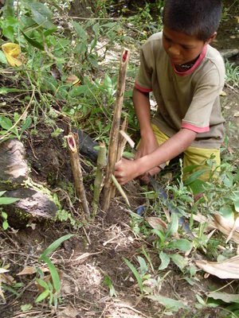
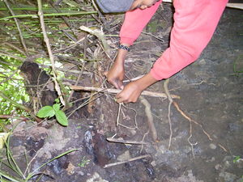
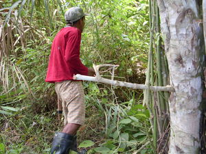

teen1   
/tɔʔɔn/
v_rt.
“trap_fish”
v.
for someone (egteteen, migteteen, agent, eg><ø-rdpCV-) to trap (fish)
Egteteen te bubu sikandan su kenad e eg-uran angkuwa.
He is trapping fish.
Eng. trap
Tag. manalakáb; manghuli ng isdâ
Ceb. mamubu
Ilo.: agappán
OCM: Hunting and Trapping (224)
Online dict status: -
Usage level: M
Updated by: RJH,QDL,RJH
Last updated: 31/Jul/2014
This page last updated: 13-Aug-2016
Copyright © 2009-2014, Matigsalug Language Christian Association, Inc